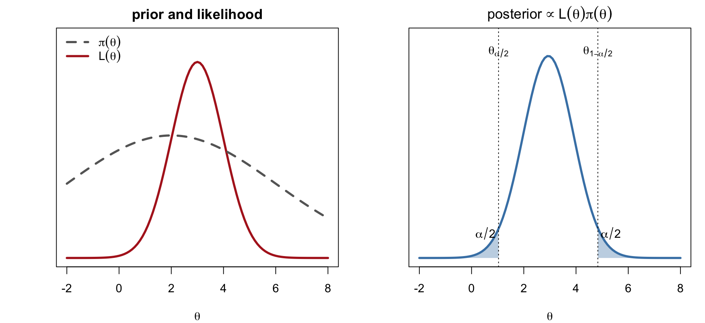
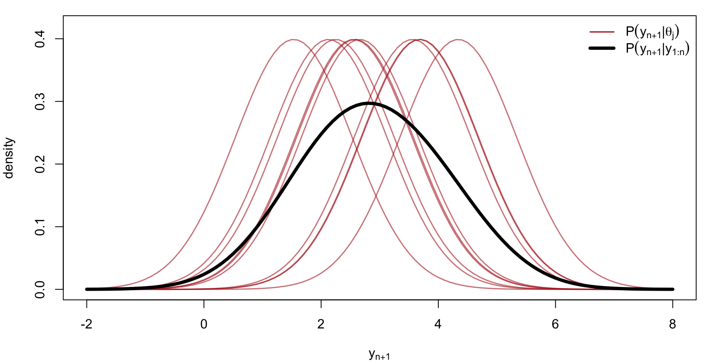
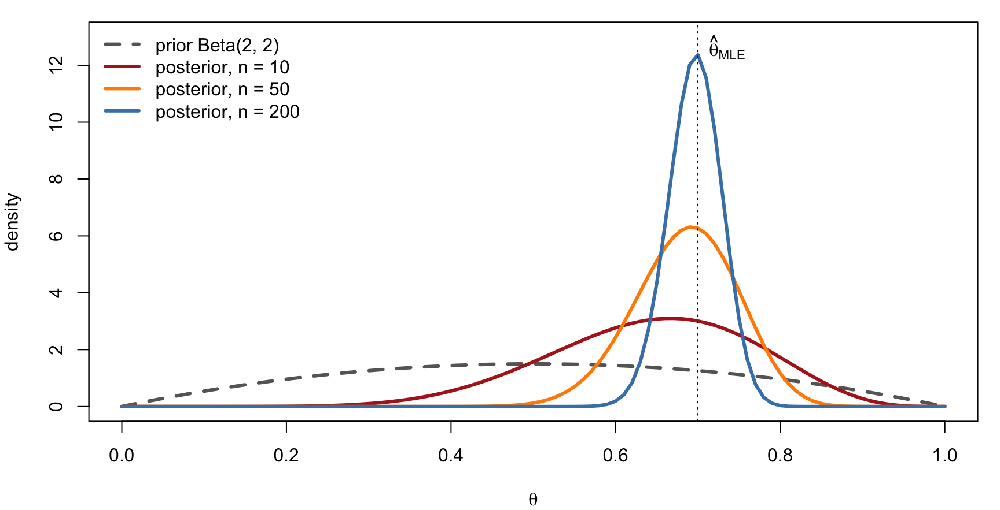

Elements of Statistical Computation
Bayesian Inference: A Brief Introduction
1. The Bayesian Framework
Four Steps
- Specify a prior \pi(\theta): rough knowledge about \theta, treated as a random variable
- Specify a probability model for the data: P(y_1,\ldots,y_n\mid\theta)
- Find the posterior by Bayes’ rule P(\theta\mid y_1,\ldots,y_n) = \frac{P(y_1,\ldots,y_n\mid\theta)\,\pi(\theta)}{\displaystyle\int P(y_1,\ldots,y_n\mid\theta)\,\pi(\theta)\,d\theta}
- Interpret the posterior: summarize \theta, make predictions
Writing L(\theta) = P(y_{1:n}\mid\theta) for the likelihood, P(\theta\mid y_{1:n}) \propto L(\theta)\,\pi(\theta)
The denominator P(y_{1:n}) = \int L(\theta)\pi(\theta)\,d\theta is the marginal likelihood; it does not depend on \theta and is usually the hard part to compute.
Four Steps (Continued)
Left: a flat prior and the likelihood. Right: the posterior \propto L(\theta)\pi(\theta), with a (1-\alpha) credible interval (\theta_{\alpha/2},\theta_{1-\alpha/2}) cutting off \alpha/2 in each tail.

Summarizing \theta: Point Estimates from Loss Functions
The Bayes estimate minimizes the posterior expected loss: \hat\theta = \arg\min_{\hat\theta}\; E\big[L(\theta,\hat\theta)\mid y_{1:n}\big]
| Loss L(\theta,\hat\theta) | Bayes estimate \hat\theta |
|---|---|
| (\theta-\hat\theta)^2 (squared error) | posterior mean E(\theta\mid y_{1:n}) |
| \lvert\theta-\hat\theta\rvert (absolute error) | posterior median |
| I(\theta\ne\hat\theta) (0–1 loss) | posterior mode (MAP) |
Interval estimate: a (1-\alpha) credible interval (\theta_{\alpha/2},\theta_{1-\alpha/2}) contains \theta with posterior probability 1-\alpha, a direct probability statement about \theta (unlike a confidence interval).
All of these are integrals or optimizations over the posterior, which is why Bayesian inference is computational.
Prediction
The posterior predictive distribution of a new observation: P(y_{n+1}\mid y_{1:n}) = \frac{\int P(y_{n+1},y_{1:n}\mid\theta)\,\pi(\theta)\,d\theta}{\int P(y_{1:n}\mid\theta)\,\pi(\theta)\,d\theta}
If y_1,\ldots,y_n,y_{n+1} are conditionally independent given \theta, this simplifies to P(y_{n+1}\mid y_{1:n}) = \int P(y_{n+1}\mid\theta)\,P(\theta\mid y_{1:n})\,d\theta
an average of the sampling density over the posterior. With posterior draws \theta_1,\ldots,\theta_J\sim P(\theta\mid y_{1:n}), P(y_{n+1}\mid y_{1:n}) \approx \frac1J\sum_{j=1}^J P(y_{n+1}\mid\theta_j)
The predictive distribution is wider than any single P(y_{n+1}\mid\theta_j): it carries both sampling variability and posterior uncertainty about \theta.
Prediction (Continued)
Red: P(y_{n+1}\mid\theta_j) for ten posterior draws \theta_j. Black: their average, the posterior predictive density.

2. Example: Bernoulli Data with a Beta Prior
Prior
y_1,\ldots,y_n\mid\theta \overset{iid}{\sim}\text{Bern}(\theta), with \theta\sim\text{Beta}(\alpha_1,\alpha_0), \alpha_1,\alpha_0>0 given: \pi(\theta) = \frac{\Gamma(\alpha_0+\alpha_1)}{\Gamma(\alpha_0)\Gamma(\alpha_1)}\,\theta^{\alpha_1-1}(1-\theta)^{\alpha_0-1}, \qquad 0<\theta<1
E(\theta) = \frac{\alpha_1}{\alpha_0+\alpha_1}, \qquad V(\theta) = \frac{\alpha_0\alpha_1}{(\alpha_0+\alpha_1)^2(\alpha_0+\alpha_1+1)}
- \alpha_1 acts like a prior count of successes, \alpha_0 of failures; \alpha_0+\alpha_1 is the prior “sample size”
- \text{Beta}(1,1) = \text{Unif}(0,1); \text{Beta}(2,1) has density 2\theta, favouring large \theta
- Small \alpha’s give U-shaped or flat priors (vague); large \alpha’s concentrate the prior
Prior (Continued)

Likelihood and Posterior
Likelihood: with P(y_i\mid\theta) = \theta^{y_i}(1-\theta)^{1-y_i} and \mathbf y = (y_1,\ldots,y_n), P(\mathbf y\mid\theta) = \prod_{i=1}^n \theta^{y_i}(1-\theta)^{1-y_i} = \theta^{n_1}(1-\theta)^{n_0}, \qquad n_1 = \sum_i y_i,\ \ n_0 = n - n_1
Posterior: \begin{aligned} P(\theta\mid\mathbf y) &= \frac{\pi(\theta)\,P(\mathbf y\mid\theta)}{P(\mathbf y)} \;\propto\; \theta^{\alpha_1-1}(1-\theta)^{\alpha_0-1}\cdot\theta^{n_1}(1-\theta)^{n_0} \\ &= \theta^{(\alpha_1+n_1)-1}(1-\theta)^{(\alpha_0+n_0)-1} \end{aligned}
This is the Beta kernel with updated parameters \alpha_1' = \alpha_1+n_1, \alpha_0' = \alpha_0+n_0: \theta\mid\mathbf y \sim \text{Beta}(\alpha_1+n_1,\ \alpha_0+n_0)
The Beta prior is conjugate to the Bernoulli likelihood: the posterior has the same form, and the normalizing constant P(\mathbf y) never has to be computed explicitly.
Posterior Summaries
E(\theta\mid\mathbf y) = \frac{\alpha_1+n_1}{\alpha_0+\alpha_1+n} = \underbrace{\frac{\alpha_0+\alpha_1}{\alpha_0+\alpha_1+n}}_{w}\cdot\frac{\alpha_1}{\alpha_0+\alpha_1} + (1-w)\cdot\underbrace{\frac{n_1}{n}}_{\hat\theta_{\text{MLE}}}
a weighted average of the prior mean and the MLE; the data weight 1-w\to1 as n\to\infty.
V(\theta\mid\mathbf y) = \frac{(\alpha_1+n_1)(\alpha_0+n_0)}{(n+\alpha_0+\alpha_1)^2(n+\alpha_0+\alpha_1+1)} = O\!\left(\frac1n\right)
- The posterior variance shrinks to zero: the posterior concentrates at the true \theta as n\to\infty
- Compare with the sampling distribution of the MLE, \hat\theta_{\text{MLE}}\ \dot\sim\ N\big(\theta_0,\,1/(nI(\theta_0))\big), whose variance is also O(1/n); for large n the two approaches agree, with the prior’s influence vanishing
Posterior Summaries (Continued)
Prior \text{Beta}(2,2) and posteriors after n = 10, 50, 200 observations with \bar y = 0.7. The posterior narrows at rate 1/\sqrt n and centres on the MLE.

Where Computation Enters
For the Beta–Bernoulli model everything is closed-form. In general:
| Quantity | Requires |
|---|---|
| Normalizing constant P(\mathbf y) = \int L(\theta)\pi(\theta)\,d\theta | integration over \theta |
| Posterior mean, variance, probabilities | integration over \theta |
| Posterior mode | optimization |
| Posterior predictive \int P(y_{n+1}\mid\theta)P(\theta\mid\mathbf y)\,d\theta | integration over \theta |
| Credible intervals | posterior quantiles |
- One-dimensional \theta: numerical quadrature
- Multi-dimensional \theta: Monte Carlo with posterior draws \theta_1,\ldots,\theta_J, obtained by Markov chain Monte Carlo (next lectures), turning every integral into a sample average